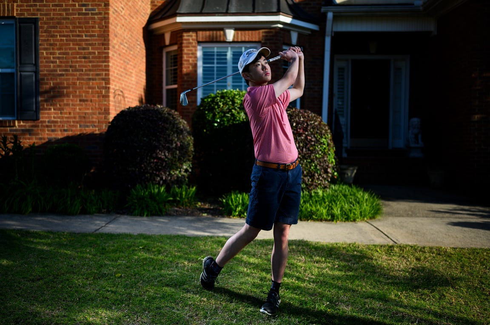
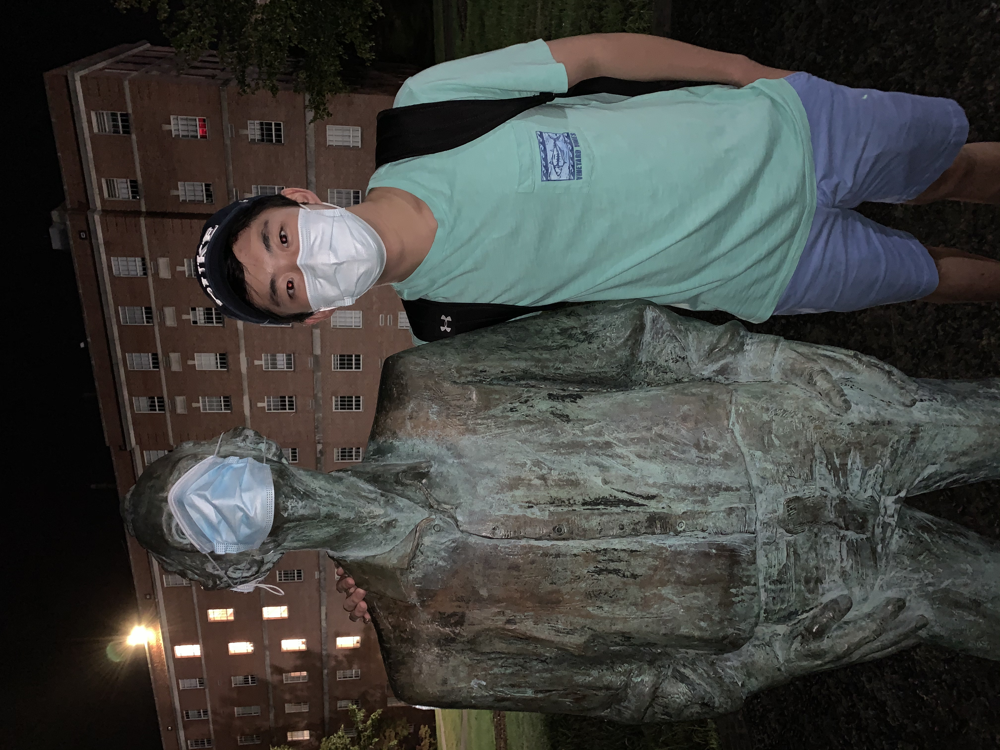
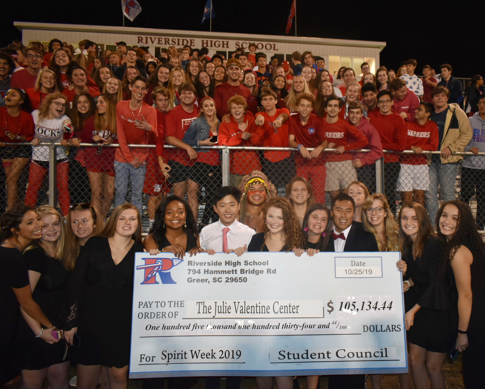

Interests
I’m an avid golfer, and in my free time you can find me enjoying a round of golf at the Washington Duke Golf Club,
where I am a member of the Duke Club Golf team. Simply being outdoors is a passion for me in its own right; I also really enjoy hiking and outdoor exploration.
Whether I’m outdoors or indoors, I constantly listen to music. My favorite genre is EDM,
but I also really like pop, alt, and 2000s rock music. Some of my favorite artists are Gryffin, Illenium, Khalid, Jeremy Zucker, A R I Z O N A, and Lauv.
I’m a builder by heart, and enjoy creating new things. I find excitement in developing
new apps and software, as well as 3D printing items for my college dorm. There's something captivating about taking an idea and building it into a working product.
I enjoy spending time with friends and meeting new people.
I find community through various clubs at Duke and my fraternity, Delta Tau Delta.


